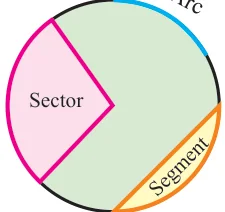
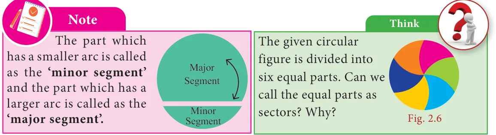
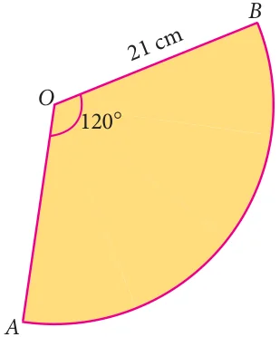
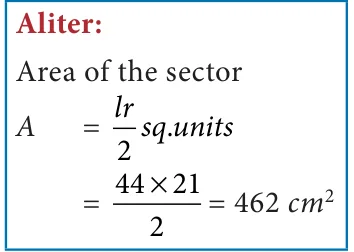
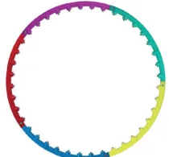
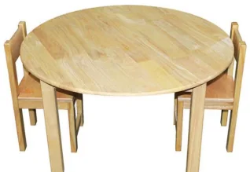
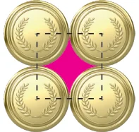
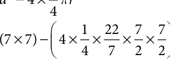

A circle is the path traced by a moving point so that its distance
from a fixed point is always constant. The fixed point of the circle is called its ‘centre’ and the constant distance is called its ‘radius’.
Fig. 2.1
Further, if any two points on the circrumference of a circle are
joined by a line segment, then the line segment is called a ‘chord’. A chord divides a circle into two parts. A chord which passes through _{O} the centre of a circle is called as a ‘diameter’. A diameter of a circle \(^{B}\) Diameter \(^{C}\)
divides it into two equal parts. It is also the ‘longest chord’ of a circle. D E
Activity Fig. 2.2
- 1.Using a bangle, draw a circle on the paper and cut it. Then mark any two
points A and B on it and fold the circle so that the fold has A and B on it. Now, this line segment represents a chord.
- 2.By paper folding, find two diameters and hence the centre of a circle.
- 3.Check whether the diameter of a circle is twice its radius.
2.2.1 Circular Arc and Circular Sector
Look at the glass bangle and the pizza given in Fig. 2.3 carefully.
Though both are of circular shapes, what we understand is that, the bangle indicates the boundary of
the circle, whereas the pizza indicates the plane enclosed within the boundary of the circle. Thus, it is clear that the bangle indicates the circumference of the circle whereas A2 the pizza indicates the area of the circle.
Fig. 2.3
From them, cut a part as shown in Fig. 2.4. \(^{B}\)
Each of the glass bangle pieces represents the circular arcs. Here, arc AB (AB)is the smaller one and Fig. 2.4
arc BA ( BA ) is the larger one. Each of the parts of the pizza represents the circular sectors. Here A_{1} is the minor sector and A_{2} is the major sector. A part of the circumference of a circle is called a circular arc. The plane surface that is enclosed between two radii and the circular arc of a circle is called a sector. Fig. 2.5 Each part of a circle which is divided by a chord is called a segment.


Central Angle
The angle formed by a sector of a circle at its centre is called the central angle. The vertex of the central angle of the sector is the centre of the circle. The two arms of it are

2.2.2 Length of the arc and Area of the sector \(^{\circ}\)

We have already learnt that a circle of radius ‘r’ units has Central angle \(= 360 ^{\circ}\) Circumference of the circle \(= 2 \pi\) units
Area of the circle \(= \pi r\) Sq.units. First, let us take a circle . If a circle is divided into 2 equal sectors we will get 2 semi-circles. The length of a semi-circular arc is half of the circumference of the circle and the area of the semi-circle is half of the area of the circle.
Length of the semi-circular arc \(= \frac{1}{2} \times = \frac{180}{360} \times\)
Area of the semi-circle \(= \frac{1}{2} \times = \frac{180}{360} \times\) pr Smilarly, if a circle is divided into 3 equal sectors,
Length of the arc of this sector \(= \frac{1}{3} \times = \frac{120}{360} \times\)
Area of the sector \(= \frac{1}{3} \times = \frac{120}{360} \times\) pr In the same way, if a circle is divided into 4 equal sectors,
Length of the arc of the circular quadrant \(= \frac{190}{4360} \times =\)
Area of the quadrant \(= \frac{1}{4} \times\) pr \(= \frac{90}{360} \times\) sq.units What do we know from this?
2
If the ratio of the central angle of a sector to the central angle of a circle is multiplied with the circumference and the area of the circle, we can find the length of the arc of that sector and its area respectively. That is, if we assume that the central angle of a sector of radius ‘r’ units as θ \(^{\circ}\) , then, the ratio of the central angle \(q ^{\circ}\) to \(360 ^{\circ}\) is \(\frac{q ^{\circ}\) }{360} .
Fig. 2.11
Length of the arc, \(l = \frac{θ}{360} \times 2 \pi r\) units
Area of the sector, \(A = \frac{θ}{360} \times \pi r\) sq.units.
2
Think
Instead of multiplying by 1 , 1 and 1 , we shall multiply by \(180 ^{\circ}\) , \(120 ^{\circ} 2 3 4 360 ^{\circ} 360 ^{\circ}\) and \(\frac{90 ^{\circ} }{360 ^{\circ}\) } respectively. Why?
Note
- 1.If a circle of radius r units divided into n equal sectors, then the
Length of the arc of each of the sectors \(= \frac{1}{n} \times 2pr\) units and
Area of each of the sectors \(= \frac{1}{n} \times\) pr sq.units
- 2.Also, the area of the sector is derived as \(= \frac{θ ^{\circ} }{360} ^{\circ} \times \pi r\)
\(= \frac{1θ ^{\circ}\) }{2360} \(^{\circ} \times 2 \pi\) r \(\times\) \(r =\) \(\frac{1lr}{22} \times\) l \(\times r =\) sq.units
2.2.3 Perimeter of a sector _{r}
We already know that the total length of the boundary of a _{l} closed part is its perimeter, Isn’t it? What is the boundary of \(a ^{O}\) sector? Two radii (OA and OB) and an arc AB . Fig. \(2.12^{r} _{A}\) So, the perimeter of a sector = length of the arc + length of two radii
\(P = l + 2r\) units
\(\therefore\) Perimeter of a sector, \(P = l + 2r\) units
Tamil people always have a prominent role in the history of Mathematics. They had recorded in the form of a song on how to find the area of a circle, a few thousand years before itself, in the book titled ‘Kanakkathikaram’. (கணக்கதிகாரம்). The song is as follows:
“வட்்டத்்தரை கொ>ொண்டு விட்்டத்்தரை தாக்்கச் சட்்டடெனத் தோ�ோன்றும் குழி ” Meaning:
‘வட்்டத்்தரை’ represents half of the circumference and ‘விட்்டத்்தரை’ represents half of the diameter which is the radius and ‘குழி’ represents the area. In this song, the Tamil people had recorded that, if half the circumference is multiplied by half the diameter, the area of the circle can be calculated. Area of the circle = வட்்டத்்தரை \(\times\) விட்்டத்்தரை \(= 12\) of circumference \(\times 12\) of diameter = \(\frac{1}{2} \times\) 2pr \(\times\) r
\(\therefore\) Area of the circle, \(A =\) pr sq.units
Note
- 1.The perimeter of a semi-circle
\(P = l+2r\) units
pr 2r (p 2)r units \(_{A} _{r} _{O} _{r} _{B} B _{l}=\) units
\(\frac{pr}{2}\)
- 2.The perimeter of a circular quadrant r
\(P = l + 2r = \frac{prp}{22} + 2r =\) + 2 r units \(^{O} ^{r} ^{A}\)
Example 2.1
The radius of a sector is 21cm and its central angle is \(120 ^{\circ}\) . Find (i) the length of the arc (ii) area of the sector (iii) perimeter of sector. p \(= \frac{22}{7}\)

Solution:
Radius, \(r = 21\) cm and central angle, θ \(= 120 ^{\circ}\) .
- (i)Length of the arc, \(l = \frac{θ ^{\circ} }{360} ^{\circ} \times 2 \pi r\) units
\(\frac{12022}{3607} 2 21\)
\(= 44\) cm (approximately)
- (ii)Area of the sector, \(A = \frac{θ ^{\circ} }{360} ^{\circ} \times \pi r\) sq.units.
Fig. 2.13

\(\frac{12022}{3607} 21 21 A = 462\) sq.cm (approximately)
- (iii)Perimeter of the sector, \(P = l + 2r\) units
\(= 44+2 \times 21 = 44+42 = 86\) cm (approximately)
Example 2.2
A circular shaped gymnasium ring of radius 35cm is divided into 5 equal arcs shaded with different colours. Find the length of each of the arcs.

Solution:
Radius, \(r = 35\) cm and \(n = 5\). Length of each of the arcs, \(l = \frac{1}{n} \times 2pr\) units
\(= \frac{1}{5} \times 2 \times p \times 35 =14p\) cm. Fig. 2.14
Example 2.3
A spinner of radius 7.5 cm is divided into 6 equal sectors. Find the area of each of the sectors.

Solution:
Radius, \(r = 7.5\) cm and \(n = 6\).
Area of each of the sectors, \(A = \frac{1}{n} \times\) pr sq. units
\(= \frac{1}{6} \times p \times 7 5\). \(\times 7 5\). \(= 9 375\). p sq. cm Fig. 2.15
Example 2.4
Kamalesh has a dining table, circular in shape of radius 70 cm whereas Tharun has a circular quadrant dining table of radius 140 cm. Whose dining table has a greater
area? p \(= \frac{22}{7}\)

Solution:
Area of the dining table with Kamalesh =pr sq. units
\(= \frac{22}{7} \times 70 \times 70\) Fig. \(2.16 A = 15400\) sq.cm (approximately.)
Area of the circular quadrant dining table with Tharun
\(= \frac{12122}{447}\) pr \(= \times \times 140 \times 140 A = 15400\) sq.cm (approximately.)
We find that, the area of the dining tables of both of them have the same area.
Fig. 2.17
Think
If the radius of a circle is doubled, what will happen to the area of the new circle so formed?
Example 2.5

Four identical medals, each of diameter 7cm are placed as shown in Fig. 2.18. Find the area of the shaded region between the medals. p \(= \frac{22}{7}\)
Solution:

Diameter, \(d = 7\) cm, .
Area of the shaded region = Area of the square \(- 4 \times\) Area of the circular quadrant
\(= a - 4 \times\) pr

= ( \(\times\) ) -
\(= 49 - 38.5 = 10.5\) sq.cm. (approximately)